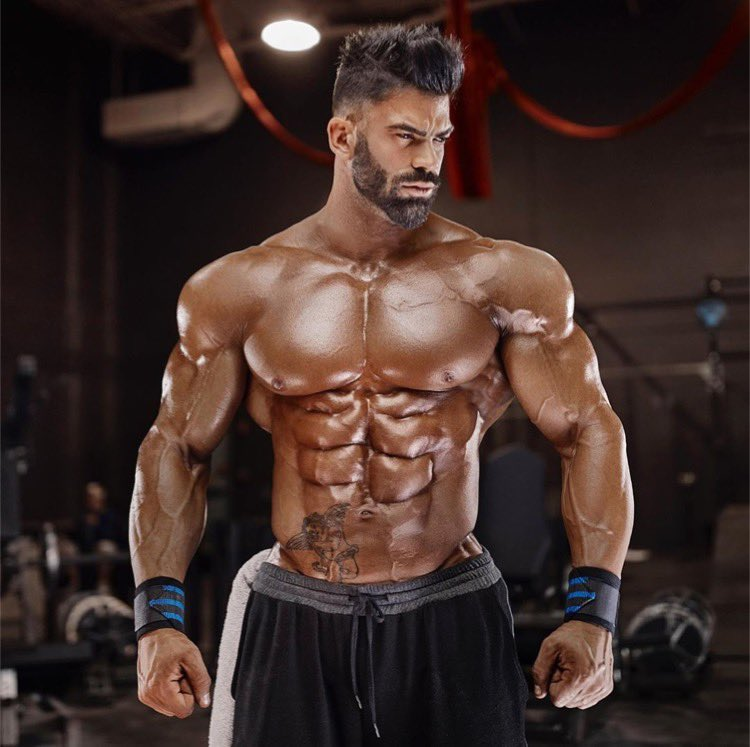
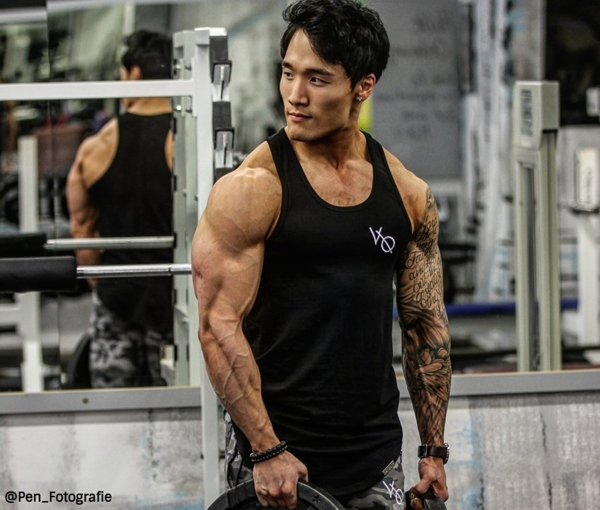

Way To Be Healtheir
14 June 2021
Bench press. Lat pulldown. Biceps curls. Ab crunches. Leg press. For many men, these are their go-to choices for strength-training workouts.
While these exercises can certainly help increase strength or improve definition, each one focuses on just one body part or muscle group at a time, which is not actually the way muscles are designed to function. Men who have been doing these exercises for an extended period of time might find they have hit a plateau and their workouts are not producing the same results. The solution is to change up a workout routine to add new exercises that use different muscles or, at the very least, use the same muscles but in different ways.
Level Up Workout
15 June 2021
If you are looking for ways to level-up your workouts and add more strength, give these options a try. Each exercise includes one modification to give you more control so you can learn how to do it properly, as well as one option for increasing the challenge, so you can add more strength. An added bonus: Exercises that use the hips and shoulders at the same time are performed from a standing position (such as a bent-over barbell row or a squat to shoulder press) can increase the activation of core muscles to enhance overall levels of strength.